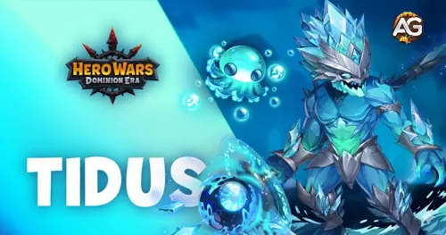
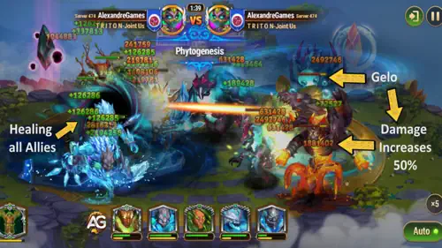
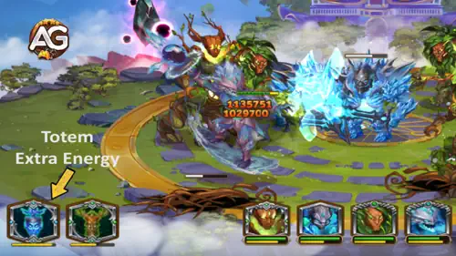
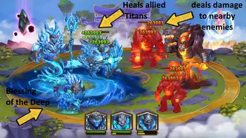
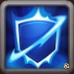
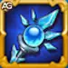
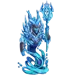
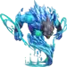
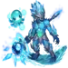
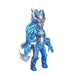

Tidus é um invocador de Água revolucionário que transforma o campo de batalha ao liberar o potencial oculto de seus aliados. Como um Titã de suporte da linha do meio, ele traz uma mecânica única em Hero Wars: Dominion Era através de seu companheiro Gelo, criando sinergias devastadoras com causadores de dano e equipes do elemento Água.
Este guia completo ajuda você a dominar as mecânicas complexas de Tidus, desde suas habilidades que causam Fragilidade até fusões ótimas de Totem. Seja avançando em masmorras ou subindo nas classificações de PvP — entender como maximizar as habilidades de suporte de Tidus dará à sua equipe a vantagem necessária para vencer.

Tidus é um Titã invocador do elemento Água, especializado em reforçar as capacidades ofensivas da sua equipa através do seu companheiro Gelo. Suas mecânicas únicas giram em torno da invocação de um elementar gélido que oferece suporte de cura e aplica o debuff de Fragilidade nos inimigos, tornando-os vulneráveis a danos massivos de burst.
O que torna Tidus excepcional é sua natureza dupla — ele e Gelo contam como dois Titãs de Água para ativação de Totem, facilitando desbloquear efeitos poderosos do Totem Espírito da Água. Essa sinergia é crucial para composições focadas em Água tanto em PvP quanto em masmorras.
Seu estilo de jogo recompensa posicionamento estratégico e timing, já que sua eficácia aumenta quando combinado com Titãs que causam alto dano single-target. O efeito de Fragilidade que ele aplica transforma ataques moderados em golpes letais, fazendo dele um amplificador de poder em vez de um causador de dano direto.
Domine as mecânicas únicas de invocação e o sistema de debuffs de Tidus para transformar sua equipa em uma força imparável que pode sobrepujar qualquer inimigo.
Gelocinese é a habilidade principal de Tidus, que convoca Gelo, um elementar de gelo que atua tanto como curador quanto como debuffer. Ao entrar e ao morrer, Gelo restaura vida a todos os Titãs aliados, oferecendo suporte vital em momentos críticos. Enquanto ativo em campo, Gelo emite uma aura que aplica o efeito de Fragilidade em inimigos que perdem uma porcentagem significativa da sua vida máxima por um único ataque.
O debuff de Fragilidade é onde essa habilidade realmente brilha — ele aumenta o dano recebido pelos alvos afetados e cria combinações devastadoras com titãs de burst. A sobrevivência de Gelo está ligada a um pool de vida compartilhado com Tidus. Embora Gelo não possa ser alvo direto, o dano recebido por Tidus é repassado a Gelo, tornando a proteção de Tidus essencial para manter ambos vivos.
Fórmula: Vida de Gelo = (Vida Máxima de Tidus × multiplicador de vida). A cura e o aumento de dano da Fragilidade dependem do nível da habilidade e do poder do Titã.

Dica estratégica:
Posicione Tidus atrás dos seus Titãs mais resistentes para minimizar a transferência de dano para Gelo. Quanto mais Gelo sobreviver, mais debuffs de Fragilidade se acumulam nos inimigos, multiplicando exponencialmente o dano da sua equipa.
Ligação Espiritual - Água cria uma conexão mística entre Tidus e Gelo, fazendo-os agir como uma corrente do elemento Água. A principal função desta habilidade é facilitar a ativação de Totem — juntos eles contam como 2 Titãs de Água para ativação do Totem Espírito da Água, significando que você só precisa de mais um Titã de Água para desbloquear efeitos poderosos baseados em Água.
Além da contagem, essa ligação gera energia aumentada durante a batalha especificamente para a ativação do Totem de Água. Essa geração acelerada de energia garante que sua equipa acione com mais frequência os efeitos do Totem Espírito da Água, oferecendo cura e dano consistentes durante os combates. Isso faz de Tidus um excelente pilar para composições focadas em Água.
Em cenários PvP, essa habilidade dá vantagem significativa a times de Água ao garantir ativação de Totem com restrições mínimas. Para masmorras, oferece suporte constante para encontros prolongados contra salas de elemento Fogo ou mistas.

Dica de formação de equipa:
Maximize essa habilidade pareando Tidus com pelo menos mais um Titã de Água para garantir a ativação do Totem. Priorize Titãs de Água que causam alto dano single-target para aproveitar ao máximo o debuff de Fragilidade de Gelocinese.
O Totem Espírito da Água é a habilidade central que define composições baseadas em Água. Ele exige pelo menos 3 Titãs de Água em campo para ativação (facilmente alcançável já que Tidus e Gelo contam como 2). Quando ativado, desencadeia a "Bênção das Profundezas" — uma habilidade poderosa que cura Titãs aliados e causa dano aos inimigos próximos por 10 segundos.
O que torna este Totem excepcional é sua distribuição inteligente da cura. Cada ativação reparte a vida restaurada entre os Titãs que mais precisam, assegurando uma alocação eficiente de recursos durante a luta. A combinação de dano e cura cria pressão no campo de batalha e força os inimigos a lidar com ameaças ofensivas e defensivas ao mesmo tempo.
Fórmula: Dano e Cura total por ativação = 595.687,5 (no nível máximo). Essa cura e dano consideráveis oferecem suporte enorme em combates prolongados.
Além disso, o Totem concede bônus de status permanentes a todos os Titãs de Água na sua equipa, melhorando sua eficácia em combate antes mesmo da ativação ativa. Isso transforma o Totem Espírito da Água em uma das habilidades de suporte mais valiosas para equipes focadas em Água.

Estratégia de ativação:
No PvP, o Totem Espírito da Água pode virar lutas apertadas com sua cura e dano combinados. Em masmorras, a cura constante permite sobreviver a várias ondas sem depender exclusivamente de curandeiros dedicados.
A eficácia de Tidus aumenta drasticamente com as fusões de Totem elementais corretas. Essas habilidades adicionais ativam-se junto com o Totem Espírito da Água e criam combinações devastadoras que amplificam seu suporte e a capacidade de dano da equipa.
No painel de fusão você escolhe o tipo de habilidade (Elemental ou Primordial), seleciona a habilidade desejada e investe catalisadores. Mais catalisadores aumentam as chances de obter uma habilidade em nível mais alto. Se você já possui uma habilidade fundida, tentar fundir a mesma habilidade aumenta a probabilidade de obter uma versão de nível superior. Lembre-se que apenas a habilidade de maior nível é ativada se vários Totems compartilharem a mesma habilidade. Habilidades Elementais disparam globalmente sem tempo de recarga, enquanto as Primordiais têm condições específicas de ativação e tempos de recarga individuais por Titã.
Último Raio é a melhor escolha para Tidus porque o transforma em uma ameaça indestrutível em momentos críticos. Quando Tidus morreria, ele entra em Fúria Ardente: torna-se invulnerável, recebe +15% de velocidade e um enorme bônus de ataque por 5 segundos ao ficar com 1 de vida. Como Gelo compartilha o pool de vida de Tidus, esse efeito mantém ambos vivos e preserva os debuffs de Fragilidade e o suporte da equipa. O aumento de ataque de 16.100 não beneficia diretamente Tidus (que não causa dano), mas a janela de 5 segundos permite aplicação contínua de Fragilidade e ativações de Totem. Essa ativação única por batalha pode ser a diferença entre vitória e derrota, especialmente em PvP acirrados.
Idade do Gelo garante o segundo lugar com sua mecânica de contra-ataque que pune ativações de Totem inimigas. No momento em que o Totem do oponente é ativado, Idade do Gelo congela toda a equipa inimiga por 1 segundo e aplica Fragilidade a todos por 5 segundos. Isso cria uma combinação devastadora com a Fragilidade natural de Gelocinese, empilhando debuffs e deixando inimigos vulneráveis a dano massivo. O congelamento de 1 segundo interrompe rotações e ultimates inimigos, enquanto a aumento de dano de 15,8% da Fragilidade se soma a outros debuffs. Em PvP defensivo, pega times agressivos desprevenidos; em masmorras, oferece uma janela de segurança contra mecânicas de chefe.
O Sussurro das Profundezas fica em terceiro como a opção focada em suporte, complementando o papel de Tidus. Ele gera um redemoinho que fornece 50.312 de cura e dano totais por ativação durante 10 segundos, distribuídos de forma inteligente entre Titãs feridos. Isso combina bem com a cura do Totem Espírito da Água e cria suporte sobreposto que mantém sua equipa viva em lutas longas. Embora não tenha o impacto dramático de Último Raio ou Idade do Gelo, brilha em masmorras, onde a sobrevivência prolongada contra múltiplas ondas é essencial.
Fusões de Totem Primordiais oferecem habilidades condicionais que ativam-se com tempos de recarga individuais de Titã. Para Tidus, essas fusões aumentam sua sobrevivência e geração de energia, permitindo suporte mais consistente à equipa.
Pulso dos Anciões ocupa o primeiro lugar para Tidus devido à sua cura consistente ligada ao uso de habilidades. Toda vez que Tidus usa uma habilidade, ele recebe 112.000 de cura (não mais que uma vez a cada 21 segundos). Como Tidus cicla Gelocinese para invocar Gelo e se beneficia de ativações frequentes de Totem pela Ligação Espiritual, isso ocorre regularmente em combate. A cura mitiga a vulnerabilidade do pool de vida compartilhado com Gelo — manter Tidus saudável mantém ambos vivos e sustenta a pressão de Fragilidade. Em masmorras longas, essa cura reduz a dependência de curandeiros dedicados; em PvP, ajuda Tidus a sobreviver a tentativas de burst.
Fervor Primitivo fica em segundo ao acelerar a geração de energia de Tidus para ativações do Totem de Água. Com uma chance de 20% de restaurar 40% da energia máxima ao usar habilidades básicas, essa fusão cria momentos de ciclos rápidos de Totem. Combinado com o bônus de energia da Ligação Espiritual, Fervor Primitivo permite ativações mais frequentes do Totem Espírito da Água. Em PvP, pode ser decisivo — uma sequência de procs pode gerar múltiplas ativações e pressão incontrolável. No entanto, por ser baseado em chance, é menos confiável que Pulso dos Anciões.

Égide Eco ocupa a terceira posição como opção defensiva que concede escudos quando escudos existentes são quebrados. A chance de ativação de 20% concede um escudo no valor de 4,2% da vida máxima de Tidus por 5 segundos. Embora útil teoricamente, depende de efeitos de escudo para disparar — algo que Tidus não gera naturalmente. Se não for combinado com Titãs que concedem escudos, a Égide Eco fica inativa na maior parte das lutas. Quando ativada, o valor do escudo é modesto e não resolve tão bem a vulnerabilidade do pool de vida compartilhado quanto a cura do Pulso dos Anciões. Tem valor de nicho em equipes construídas ao redor de escudos, mas para uso geral é a escolha menos forte entre as Primordiais.
Tidus possui atualmente opções limitadas de skins, mas priorizá-las corretamente garante que seus recursos maximizem sua sobrevivência e habilidades de suporte em combate.
Vida: +1.022.985
Prioridade de evolução em PvP: Alta – O bônus de vida traduz-se diretamente em maior sobrevivência para Tidus e Gelo, já que compartilham o pool de vida. Mais vida significa que Gelo permanece ativo por mais tempo, aplicando Fragilidade e pressionando os inimigos.
Prioridade de evolução em Masmorras: Alta – Lutas de masmorra prolongadas exigem presença contínua. O grande aumento de vida permite que Tidus sobreviva a múltiplas ondas e mecânicas de chefe, garantindo ativações de Totem e suporte consistente.
A priorização de artefatos para Tidus foca em maximizar suas sinergias com dano de Água e sua sobrevivência, para manter Tidus e Gelo operacionais durante as batalhas.

Dano elemental: +479.475
Prioridade de evolução em PvP: Média – Embora aumente dano elemental de Água, Tidus não causa dano diretamente. O benefício só se aplica se sua equipa possuir outros Titãs de Água que possam tirar proveito do aumento. Priorize se usar vários ofensivos de Água.
Prioridade de evolução em Masmorras: Média – Brilha em composições de Água contra salas de Fogo, ajudando a eliminar ameaças mais rápido, mas perde eficiência em salas mistas ou quando Tidus é um dos poucos Titãs de Água.
Armadura elemental: +97.482
Prioridade de evolução em PvP: Alta – A Coroa da Água oferece proteção crucial contra Titãs de Água inimigos, comuns na meta PvP. Como Tidus partilha vida com Gelo, reduzir dano de Água aumenta a sobrevivência de ambos.
Prioridade de evolução em Masmorras: Média-Alta – O valor defensivo depende da composição das salas. Excelente contra salas de Água, mas situacional em outras. Ainda assim, justifica prioridade média-alta quando aplicável.
Ataque: +299.673,8
Vida: +3.995.583
Prioridade de evolução em PvP: Muito Alta – O enorme bônus de vida prolonga significativamente a sobrevivência de Tidus e Gelo, permitindo aplicação contínua de Fragilidade e ativações de Totem. Apesar do ataque não beneficiar Tidus diretamente, a vida faz deste artefato essencial em PvP competitivo.
Prioridade de evolução em Masmorras: Muito Alta – O aumento de vida é valioso para progresso em masmorras, permitindo sobreviver a múltiplas ondas e lutas contra chefes. Sua utilidade universal torna-o prioridade máxima para evolução.
Esta composição maximiza o papel de suporte único de Tidus, combinando-o com os melhores Titãs de Água e Primordiais. A sinergia entre esses Titãs garante sobrevivência e alto potencial de burst tanto em PvP quanto em masmorras.
| Melhores equipes para Tidus - Hero Wars: Dominion Era | ||||
|---|---|---|---|---|
|
 Hyperion |
 Mairi |
 Tidus |
 Nova |
Sigurd |
| Totem Água |
Elemental: Último Raio |
Primordial: Pulso dos Anciões |
||
Hyperion: Fornece cura poderosa e dano em área, mantendo a equipe viva durante batalhas intensas e punindo as linhas traseiras inimigas.
Mairi: Oferece fortes buffs defensivos, protegendo Tidus e outros Titãs chave.
Tidus: O Titã de suporte central, aplicando debuff de Fragilidade e amplificando o dano da equipe. Sua sinergia com Gelo e o Totem Água garante cura constante e alta disponibilidade do debuff.
Nova: Entrega alto dano single-target e AoE, além de controle de energia, interrompendo ativações de totem inimigas e finalizando alvos enfraquecidos.
Sigurd: Atua como tanque de linha de frente, absorvendo dano e fornecendo proteção adicional para Tidus e a retaguarda. Seu escudo e habilidades de controle são cruciais para a sobrevivência da equipe.
Totem Água: Totem principal para cura e suporte, mantendo a equipe saudável e ativando as mecânicas de suporte de Tidus.
Elemental: Último Raio: Dá a Tidus uma segunda chance em batalha, tornando-o invulnerável e aumentando velocidade e ataque por um breve período — vital para manter Fragilidade e suporte em momentos críticos.
Primordial: Pulso dos Anciões: Fornece cura consistente sempre que Tidus usa uma habilidade, aumentando muito a sobrevivência dele e de Gelo e permitindo que a equipe resista a lutas prolongadas.
Dica de Estratégia: Foque em proteger Tidus e em permitir ativações frequentes do Totem Água. Use Nova e Hyperion para pressionar as linhas traseiras inimigas, enquanto Sigurd e Mairi estabilizam a frente. A combinação de cura, escudos e debuffs torna essa equipe extremamente resiliente e capaz de virar o jogo tanto em PvP quanto em Masmorras.
Tidus se destaca como um dos Titãs de suporte mais únicos em Hero Wars: Dominion Era, oferecendo multiplicação de força através do seu debuff de Fragilidade e da contagem dupla como Titã Água. Seu sucesso depende de construção inteligente de equipe — combiná-lo com causadores de alto burst e Titãs do elemento Água para explorar ao máximo suas capacidades de suporte.
Priorize o artefato Selo da Natureza para máxima sobrevivência, depois foque na Coroa da Água para defesa ou na Maça de Siungur se estiver rodando composições ofensivas de Água. Para fusões de totem, Último Raio e Idade do Gelo oferecem as vantagens de combate mais impactantes, enquanto Pulso dos Anciões garante cura consistente em batalhas prolongadas.
Equilibre proteção para Tidus com posicionamento dos seus causadores de dano para capitalizar a Fragilidade, e você desbloqueará sinergias devastadoras que dominam tanto as arenas de PvP quanto os desafios de Masmorras. Tidus pode não causar dano direto, mas sua capacidade de amplificar o poder da equipe o torna um recurso insubstituível em estratégias focadas em Água.